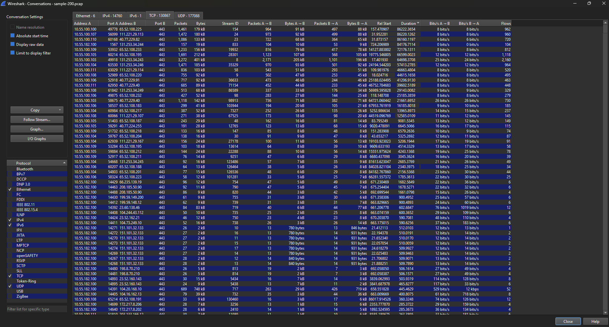
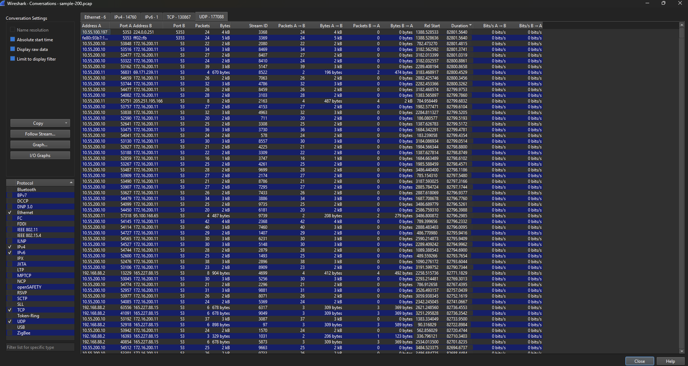
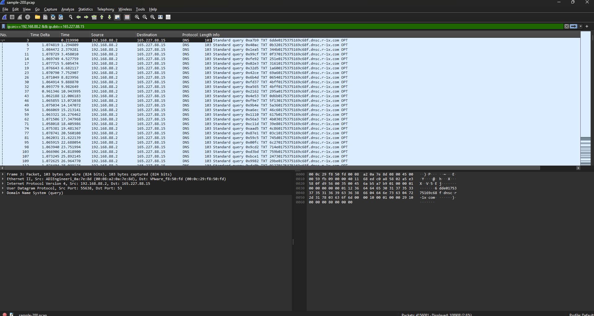
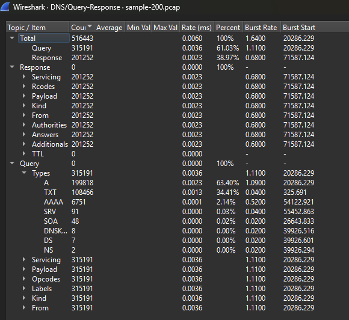

This lab had two parts: a written tabletop exercise on how I'd handle a ransomware incident hitting a mid-size company, and a hands-on threat hunt through a real packet capture looking for long-held connections, beacon traffic, and DNS tunneling.
A user opened a malicious email attachment, which led to ransomware encrypting critical files on a server. The affected enterprise includes 200 Windows servers, 6 domain controllers, 15 web servers, 4 email servers, and 1500 user workstations.
1. Initial Detection
IT Security would get an alert from the SIEM or EDR tool for unusual file activity or a ransomware signature. The affected system can be identified by checking the hostname or IP tied to the alert against the asset inventory, or by user reports of ransom notes and files that will not open. Documentation would include the alert time, hostname, affected user account, file share, and any file names or extensions tied to the ransom note.
2. Incident Identification
Logs would come from the affected server and domain controllers, focusing on event codes 4624 and 4625 for logons, 4688 for process creation, and 4720 for new accounts. Sysmon adds more log detail if installed. Wireshark or a SIEM packet capture would show unusual outbound traffic or a port being used for the wrong protocol.
A known IOC, like a hash or IP, can be checked on a single host through its logs or an antivirus scan, or across every host through a SIEM or EDR sweep. Scope and type get reported to the incident leader for CSIRT prioritization. The user and method of compromise come from the mail gateway logs for the delivering message, matching the attachment hash to the malware sample, and the logon event for the account that opened it.
3. Containment
Containment starts by isolating the infected server, either by disabling its network adapter or moving it to an isolated VLAN. The compromised account should be disabled, the firewall should block outbound traffic to any known C2 IP, and connected file shares should be disconnected to stop further encryption.
A message to users might read:
"We're looking into a security issue affecting some of our servers. For now, please don't open any unexpected email attachments and report anything unusual to IT right away. Some file shares may be down for a bit while we sort this out. We'll update you when we know more."
4. Eradication
Before removing anything, the system should be imaged and a memory dump captured for forensics. The malware can then be identified through the file hash against a resource like VirusTotal. Most ransomware cases call for wiping and rebuilding from a clean image rather than manual cleanup.
5. Recovery
Recovery starts with offline backups, since backups still connected to the network may also be encrypted. Domain controllers get restored first since other systems depend on them, then email servers, then the affected file and web servers, then workstations. A single server can take a few hours, but a full recovery across 200 servers and 1500 workstations could take several days. The timeline should be communicated to management and the IT team.
6. Post-Incident Analysis
The review should cover how the email got past filters, whether systems were patched, and whether backups were properly isolated. Improvements could include better attachment scanning, more user training, faster patch cycles, and network segmentation. Findings go into a post-incident report with a timeline and recommendations.
7. Conclusion
This shows why an incident response plan matters before an attack happens. Phishing remains one of the most common ways ransomware gets in, and fast detection and containment limits the damage. The CISA #StopRansomware Guide and NIST SP 800-61 are good references for more detail.
Cybersecurity and Infrastructure Security Agency. (2023). #StopRansomware guide. U.S. Department of Homeland Security.
https://www.cisa.gov/stopransomware/ransomware-guide
Cybersecurity and Infrastructure Security Agency. (n.d.). I've been hit by ransomware! U.S. Department of Homeland Security.
https://www.cisa.gov/stopransomware/ive-been-hit-ransomware
National Institute of Standards and Technology. (2012). Computer security incident handling guide (NIST Special Publication 800-61 Rev. 2). U.S. Department of Commerce.
https://nvlpubs.nist.gov/nistpubs/SpecialPublications/NIST.SP.800-61r2.pdf
This exercise uses sample-200.pcap from the Active Countermeasures threat hunting labs, opened in Wireshark. Three labs were completed: Long Connections, Beacons, and DNS.
This lab looks for the longest held connections in the capture. In Wireshark, this comes from Statistics > Conversations, sorted by the Duration column.
The longest TCP connection was 10.55.100.100 to 65.52.108.225 on port 443. It lasted about 86,222 seconds, almost the whole 24 hour capture.

The longest UDP conversation was 10.55.100.197 to 224.0.0.251 on port 5353. It lasted about 82,801 seconds. This is mDNS traffic, not one real session. Wireshark just measures the gap between the first and last packet with the same address and port, so a host sending occasional mDNS traffic all day can look like one long connection even though it is not.

This lab looks for connections that repeat on a steady time interval, which can point to malware checking in with a command and control server. The traffic examined was between 192.168.88.2 and 165.227.88.15.
The filter ip.src==192.168.88.2 && ip.dst==165.227.88.15 was applied, then a Time Delta column was added using Delta time displayed. The gaps between packets stayed close to 1.06 to 1.08 seconds almost the whole way through, which is the pattern of a beacon.

This lab checks the balance of DNS query types. Normal DNS traffic is mostly A and AAAA records, with very few TXT records. In Wireshark, this comes from Statistics > DNS, then Query/Response, then expanding Query > Types.
Out of 315,191 total queries, 199,818 were A records (63.4%) and 108,466 were TXT records (34.41%). That is a large amount of TXT traffic for normal DNS. It lines up with the same beacon traffic to 165.227.88.15 found earlier, and points to DNS tunneling being used to move data out through DNS queries instead of a normal connection.
